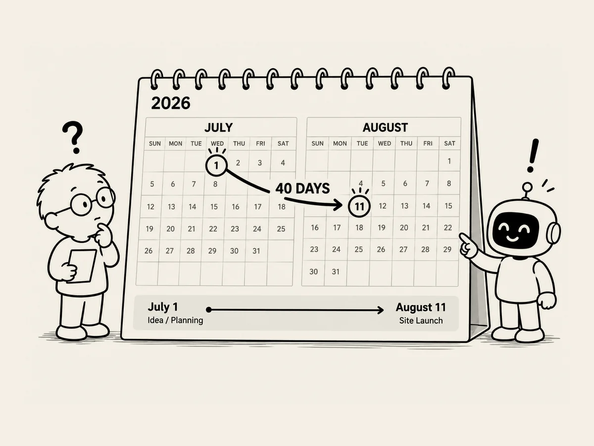

23.
最初のウェブサイトを作るのに、何日かかった？
ウェブサイトを公開してから、
もう一度見直してみた。
僕が欲しかったものは、
ほとんど全部入っている。
やっているうちに、
ただ夢中で走ってきただけだった。
何日目かを数えながら
作っていたわけではない。
ふと気になった。
ところでこれ、
何日で作ったんだ？
よく覚えていない。
聞いてみた。
「ブラックスクリーン・ノイズの
ウェブサイトを作ろうって言ったのが
いつだったか、覚えてないんだ」
AIが答えた。
「調べてみると、記録があります」
ブラックスクリーンのウェブサイトを
作ろうという考えが
はっきり出てきたのは、
2026年7月30日だったという。
その日、僕は、
「ブラックスクリーンのウェブサイトを
作ろう」
と言い、
続けて、
「Black Screen Noiseのサイトを作ってみよう」
と言って、
本格的にウェブサイト制作に
入っていったらしい。
AIは、
もう一つ教えてくれた。
「ちなみに、
ブラックスクリーン自体の企画資料は
7月初めから存在していて、
実際にサイトを公開したのは
8月11日でした」
アイデアの段階から数えると、
ウェブサイトの公開まで
約40日かかった。
本格的に
ウェブサイトを作ろうと動き始めてから数えると、
12日ほどだ。
もちろん、
まったく何もないところから
すべてを作ったわけではない。
ノイズを作ることや、
それに関する経験は、
YouTube動画を作りながら
ある程度身につけていた。
それでも、考えてみると不思議だ。
ウェブサイトを作ったこともない人が、
ある日、
「サイトを作ってみよう」
と言った。
そして12日後には、
本物のサイトが
インターネット上に公開されていた。
肝心の僕は、
いつ始めたのかさえ
正確には覚えていなかった。
その日付まで
AIに聞いている。
